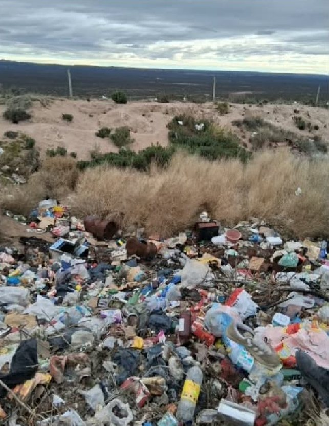
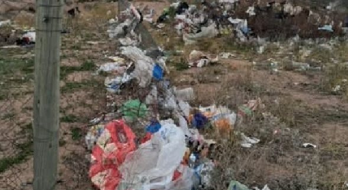
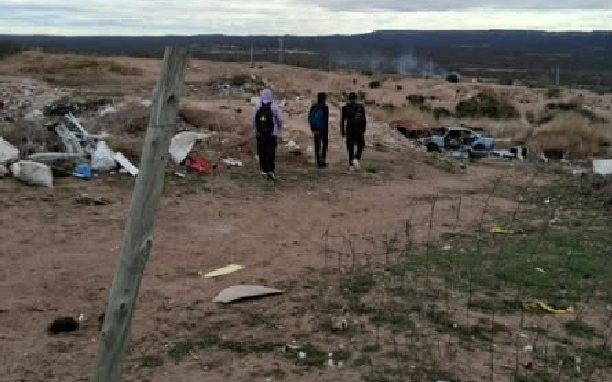
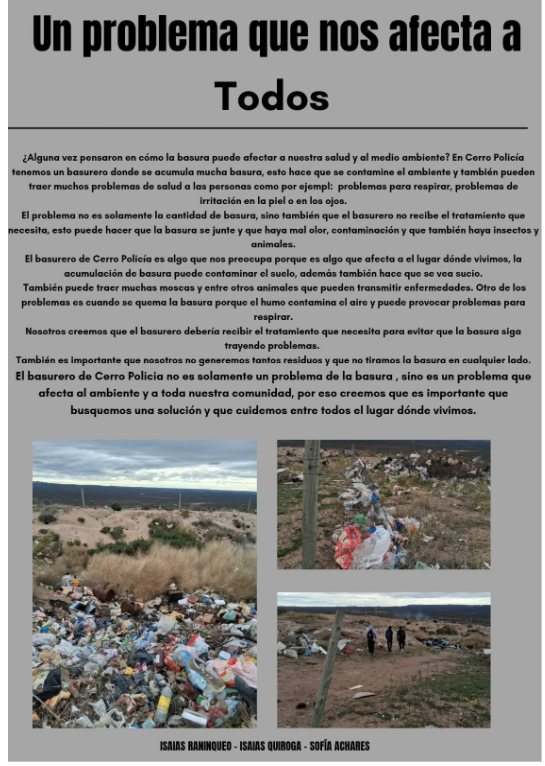

¿Alguna vez pensaste en cómo la basura puede afectar a nuestra salud y al medio ambiente?
Un problema que nos preocupa
En Cerro Policía tenemos un basurero donde se acumula mucha basura. Esto hace que se contamine el ambiente y que aparezcan problemas de salud, como problemas para respirar o irritación en la piel y en los ojos. El basurero no recibe el tratamiento que necesita, así que la basura se junta y hay mal olor, contaminación, insectos y animales.
El basurero de Cerro Policía es algo que nos preocupa porque afecta al lugar donde vivimos. La acumulación de basura contamina el suelo, hace que el lugar se vea sucio y trae muchas moscas y otros animales que pueden transmitir enfermedades.

Cuando se quema la basura
Otro de los problemas es cuando se quema la basura: el humo contamina el aire y puede provocar problemas para respirar.

¿Qué podemos hacer?
Nosotros creemos que el basurero debería recibir el tratamiento que necesita para evitar que la basura siga trayendo problemas. También es importante no generar tantos residuos y no tirar la basura en cualquier lado. El basurero de Cerro Policía no es solamente un problema de la basura, sino un problema que afecta al ambiente y a toda nuestra comunidad: por eso es importante que busquemos una solución y que cuidemos entre todos el lugar donde vivimos.

